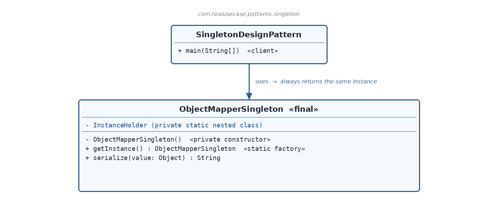

ObjectMapperSingleton.java
☕ 7 min read · 🎬 Video walkthrough · 📊 UML diagram · 💻 Runnable code
⚡ In a nutshell — Guarantee that a class has exactly one instance, and provide a global, thread-safe access point to it.
Guarantee that a class has exactly one instance, and provide a global, thread-safe access point to it.
Certain objects — loggers, configuration holders, connection pools, JSON mappers — are expensive to build, carry shared internal state, or must stay consistent everywhere they're used. Constructing a new instance every time a caller needs one wastes resources, risks inconsistent state, and can break correctness. Singleton solves this by making the class itself the sole authority over its own instantiation: at most one object is ever constructed, and every caller receives the same reference.
ObjectMapper from the Jackson library is one of the most common Singleton candidates in real Java microservices. Constructing an ObjectMapper is expensive — it scans the classpath for modules, registers serializers/deserializers, and builds internal caches. If every REST handler or service method created its own instance, the application would waste CPU and heap on every single request. Production codebases therefore keep one application-scoped ObjectMapper and reuse it everywhere — exactly what this example models. ObjectMapperSingleton is a simplified stand-in that demonstrates the structural pattern; this exact idiom appears in production Mobius code, in datalake-java-common-lib : ObjectMapperSingleton.
The class hides its constructor (private) so no external code can call new. It creates and owns a single instance internally. A static factory method, getInstance(), returns that instance. Every caller — regardless of thread, package, or layer — gets back the identical object reference.
This implementation uses the Initialization-on-Demand Holder idiom (also known as the Bill Pugh Singleton):
private static final nested class, InstanceHolder, holds the single instance as its own static final field.InstanceHolder is referenced only inside getInstance(), the instance is created lazily on the first call — with zero explicit synchronization, yet fully thread-safe by the Java Memory Model.This gets laziness, thread-safety, and zero locking overhead on the hot path — all for free, purely from how the JVM already loads classes.

Reading the diagram: SingletonDesignPattern is the client — it never touches InstanceHolder or the private constructor directly. It only ever calls the two public members of ObjectMapperSingleton: the static factory getInstance() and the instance method serialize(Object). The «final» stereotype on ObjectMapperSingleton marks that the class cannot be subclassed — closing off the one loophole that could break the single-instance guarantee.
ObjectMapperSingleton — The Singleton class. Private constructor, private static holder, one static factory method. Models a shared JSON-mapper utility.InstanceHolder — A private static nested class inside ObjectMapperSingleton. Its sole job is holding the one static final instance field; Java's class-loading semantics make this both lazy and thread-safe.SingletonDesignPattern — The client / driver class. Retrieves the singleton twice, proves both references point to the same object, then exercises serialize.package com.realusecase.patterns.singleton;
public final class ObjectMapperSingleton {
private ObjectMapperSingleton() {
}
private static final class InstanceHolder {
private static final ObjectMapperSingleton INSTANCE = new ObjectMapperSingleton();
}
public static ObjectMapperSingleton getInstance() {
return InstanceHolder.INSTANCE;
}
public String serialize(Object value) {
return String.valueOf(value);
}
}
package com.realusecase.patterns.singleton; — Places the class in its own dedicated sub-package, separate from the rest of the demo code, so the implementation is easy to locate and import independently.
public final class ObjectMapperSingleton { — public means any code, in any package, can use it. final is the important part: it blocks subclassing. If this class could be extended, a subclass could add its own public constructor and create more than one instance — breaking the entire guarantee the pattern is built on.
private ObjectMapperSingleton() {} — The cornerstone of the pattern. By hiding the constructor, the class becomes the only thing allowed to create an instance of itself. No outside code, and no subclass, can ever call new ObjectMapperSingleton() directly. In a real Jackson wrapper, this is exactly where you'd register modules and configure serialization features.
private static final class InstanceHolder { ... } — This nested class exists for one reason: to exploit how the Java class loader behaves. The JVM loads and initializes a class exactly once, and only the first time it's actually referenced. Because nothing touches InstanceHolder until getInstance() runs, this gives the pattern free, built-in laziness — with no explicit locking anywhere in this code.
private static final ObjectMapperSingleton INSTANCE = new ObjectMapperSingleton(); — The single line where the one and only instance is ever created. private static final means the field belongs to the class, has exactly one copy, and can never be reassigned once set. Calling new ObjectMapperSingleton() here is legal because a nested class shares access to its outer class's private members. The JVM's own class-initialization lock guarantees this line runs exactly once, even if many threads call getInstance() at the same moment — with zero synchronized blocks written by hand.
public static ObjectMapperSingleton getInstance() { — The public entry point. It must be static, because when it's first called there may be no instance in existence yet — you can't call an instance method on an object that doesn't exist. This method is the single, global door every caller walks through to reach the shared object.
return InstanceHolder.INSTANCE; — This is what actually triggers everything. Reading InstanceHolder.INSTANCE forces the JVM to load the InstanceHolder class right here, on this first call — which runs the constructor and creates the object. Every call after that just hands back the exact same reference, because the class is already loaded and Java never initializes it twice.
public String serialize(Object value) { return String.valueOf(value); } — The method that makes this singleton actually useful. It converts any object to a string using the JDK's String.valueOf, a simplified stand-in for Jackson's writeValueAsString. This proves the singleton isn't just a structural shell — every caller performs real work through the exact same shared instance.
SingletonDesignPattern.javapackage com.realusecase.patterns;
import com.realusecase.patterns.singleton.ObjectMapperSingleton;
public class SingletonDesignPattern {
public static void main(String[] args) {
ObjectMapperSingleton first = ObjectMapperSingleton.getInstance();
ObjectMapperSingleton second = ObjectMapperSingleton.getInstance();
System.out.println("same instance: " + (first == second));
System.out.println(first.serialize("realusecase"));
}
}
import com.realusecase.patterns.singleton.ObjectMapperSingleton; — Brings the singleton into scope by its simple name, so the rest of the file doesn't need the full package path written out every time.
ObjectMapperSingleton first = ObjectMapperSingleton.getInstance(); — The very first call to getInstance() in the whole program. It triggers everything described above: the JVM loads InstanceHolder, runs the private constructor exactly once, and first ends up holding a reference to that brand-new object.
ObjectMapperSingleton second = ObjectMapperSingleton.getInstance(); — A second call. This time InstanceHolder is already loaded, so no new object is built — the JVM just hands back the exact same reference it returned a moment ago.
System.out.println("same instance: " + (first == second)); — The proof. == compares object references, not field values — true only if both variables point at the exact same spot in memory. Because first and second both received the identical InstanceHolder.INSTANCE reference, this prints same instance: true, empirically confirming the Singleton guarantee at runtime.
System.out.println(first.serialize("realusecase")); — Calls serialize through first (calling it through second would give the identical result, since they're the same object). String.valueOf on the string "realusecase" returns it unchanged, proving the shared instance genuinely performs useful work.
static final field on outer class) — No — built at class-load, even if never used — Yes — Yesvolatile + synchronized) — Yes — Yes (Java 5+) — No — clutters the codeThe holder idiom gets laziness, full thread safety, and zero locking on the fast path — all for free, purely from how the JVM already loads classes.
setAccessible(true). Mitigation: throw an exception in the constructor if InstanceHolder.INSTANCE is already set.readResolve() to return getInstance().$ java -cp target/classes com.realusecase.patterns.SingletonDesignPattern
same instance: true
realusecase
HikariPool per application.ObjectMapperSingleton structure already exists in production Mobius code, in datalake-java-common-lib.One class. One instance. One access point for everyone.
👏 Found this useful? Give it a few claps so more developers discover it, and follow for the whole series — every article ships with a UML diagram, runnable code, a narrated video, and a companion PDF. Happy building! 🚀